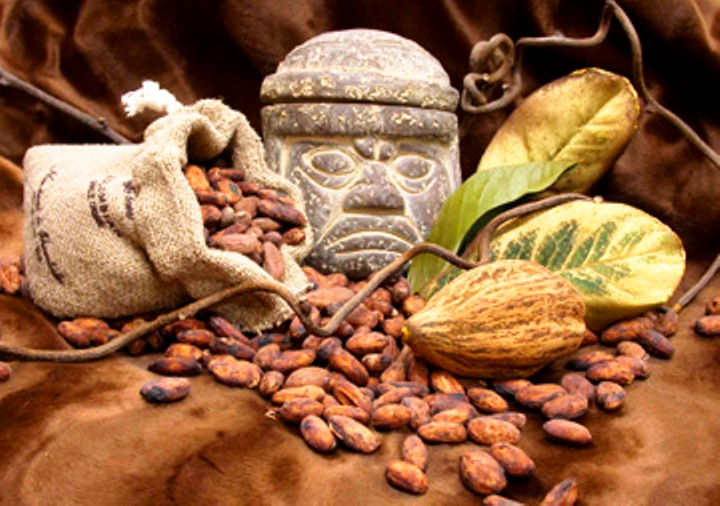
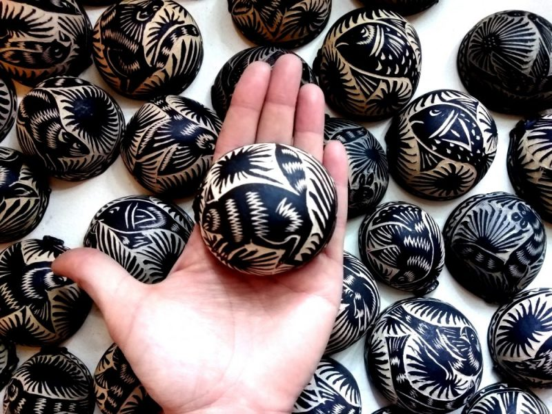

Tabasco fue el territorio donde floreció la cultura Maya, cuya riqueza dependía del cultivo del cacao, y debido a su ubicación se convirtió en una de las áreas comerciales más importantes de Mesoamérica. Esta información nos revela la gran importancia que Tabasco tuvo en el pasado, con zonas arqueológicas importantes como La Venta, La Gran Acrópolis, Comalcalco, Malpasito y Pomoná.

El cacao y el plátano son ingredientes imprescindibles en la cocina tabasqueña, mientras que los platos típicos suelen incluir ingredientes procedentes de ríos, lagos y la costa, como los pejelagartos. Por otro lado, las calabazas talladas son artesanías representativas de Tabasco, elaboradas en Jalpa y Nacajuca a partir de los frutos de la calabaza y cuyos grabados reflejan la cultura de los artesanos locales. Aunque las calabazas se utilizan a diario, diferentes pueblos les han dado usos específicos.

Notas relevantes:
Las jícaras, siendo utensilios de uso cotidiano, adquirieron diferentes significados y
usos en distintas comunidades. Los mayas, por ejemplo, las llamaban "luch", que significa "vaso" o "recipiente".
Aunque sus usos podían variar, su función principal era la de contener bebidas, ya fueran calientes o
frías.